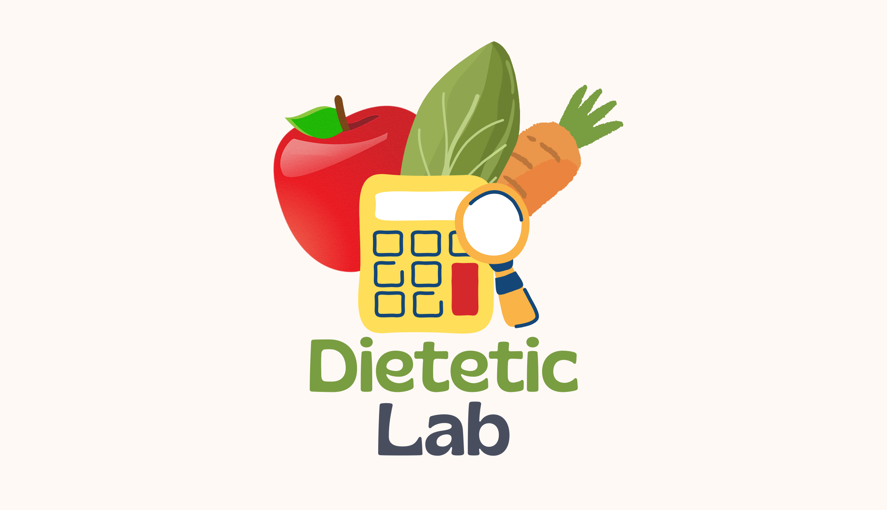

"The FantastiQuizzz"
(Projet en groupe de 3)
Quiz sur différents univers, avec possibilité de choix multi-thèmes, tableau des scores trié,
gestion d'une limite de temps pour répondre aux questions et affichage personnalisé en fonction du
score.
Développement en mobile first, utilisation du LocalStorage (tableau des scores), travail
principalement en mob programming.
Stack : HTML / CSS / JavaScript

"A vos musées !"
(Projet en groupe de 3)
Site internet utilisant deux API OpenDataGouv afin de référencer les musées de France et
les architectures contemporaines remarquables à proximité. Mise en place de filtres de recherche des
musées,
de leur répartition sur une carte de France et affichage d'un diagrame du nombre de musées par
région.
Découpage de tâches individuelles (Trello), prise du lead.
Stack : HTML / CSS / JavaScript
"Adaence"
(Projet en individuel)
Site solidaire permettant de passer un moment avec des aînés. Créé à partir d'une maquette.
Utilisation de balises sémantiques dans l'HTML. Gestion d’affichage de photos en grid,
création d’un menu burger (version mobile), responsive design. Exploitation de paramètres de
recherche (search params),
écriture de requêtes pour créer la base de données et son enrichissement.
Découpage du projet sous forme de tâches (Jira)
Stack : HTML / CSS / JavaScript
"Click & Cook"
(Projet en groupe de 3)
Blog culinaire permettant la publication de recettes, la gestion de favoris et le suivi d'autres
profils. Mise en place de l'authentification avec Django et création d'une base de données
relationnelle en PostgreSQL. Gestin des pages dynamique.
Découpage du projet sous forme de tâches individuelles (Notion)
Stack : TypeScript / Next.js / Tailwind / Python / Django /
PostgreSQL

"Dietetic Lab"
(Projet individuel en cours)
Outil d'accompagnement aux professionnels de la nutrition permettant le calcul et l'évaluation de
différents paramètres : calcul d'IMC, calcul de la dépense énergétique journalière (DEJ),
évaluation de la dénutrition chez l'adulte et la personne âgée, évaluation du risque de syndrome de
renutrition inapprorpiée (SRI), calcul des ingesta via la base de données nutritionnelle du
Ciqual.
Stack : TypeScript / Next.js / Tailwind / DaisyUI / Python /
Django / PostgreSQL